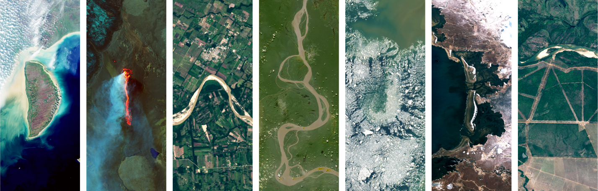

PhD Student · Land Surface Ecology & Geospatial Science
Department of Natural Resource Ecology& Management · Oklahoma State University
👋 Hello, this is Dingjin.
Explore important research questions using robust datasets and rigorous methods under well-defined assumptions.
My research focuses on above-ground biomass estimation, the cooling effects of urban green spaces, and ecosystem responses to environmental disturbances, with the overarching objective of advancing understanding of ecosystem dynamics under climate change. Further details are provided in the Research section.
The datasets employed in this work integrate in situ field observations with multi-platform remote sensing products across diverse spatial scales and long-term temporal domains, enabling consistent and multi-decadal analyses. A comprehensive description of these datasets is available in the Datasets section.
Methodologically, I combine machine learning approaches, statistical modeling, and process-based models to elucidate and quantify key ecological and environmental processes. The overall methodological framework is summarized in the Methods section.
Interactive 3D Earth — satellite orbit tracks · drag to rotate

Contact Me
Feel free to get in touch for any inquiries or opportunities. I am open to collaborations, scientific projects, and job opportunities where I can contribute my expertise in remote sensing, LiDAR, and environmental data science.
Agricultural Hall, Department of Natural Resource Ecology & Management, Oklahoma State University, Stillwater, OK